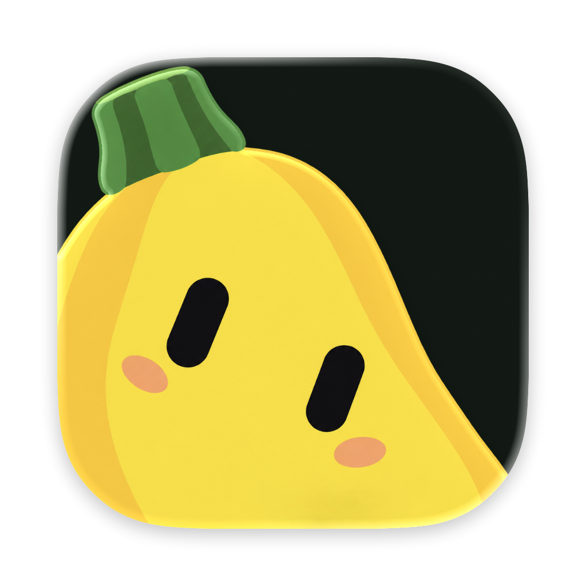
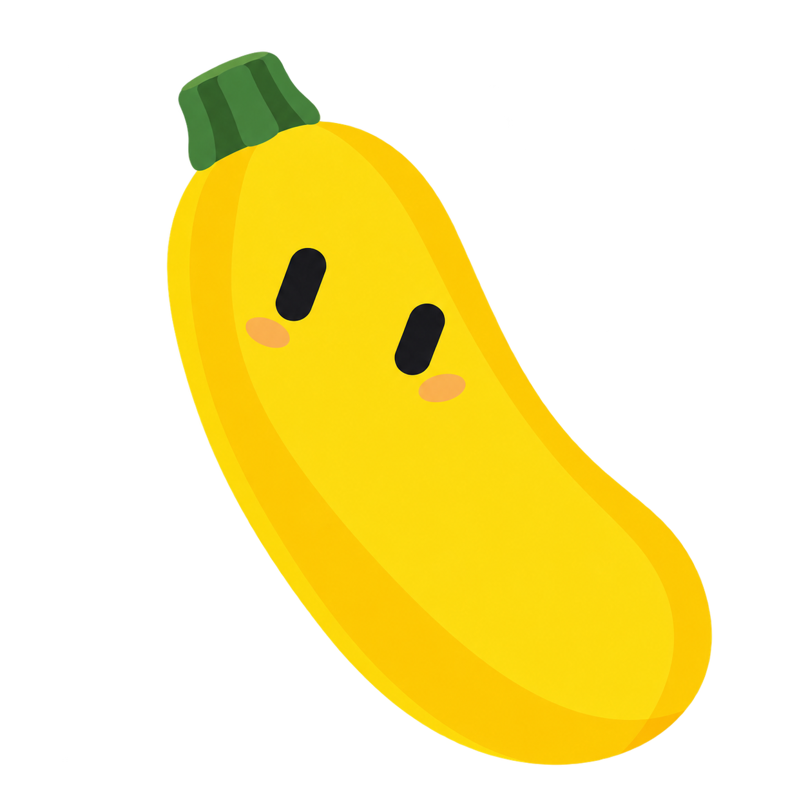
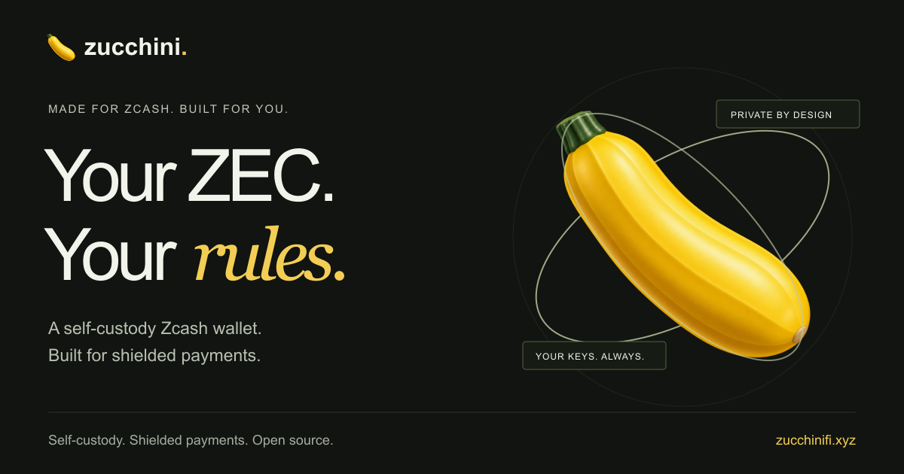

Transparent logo for layouts. Native Apple icon for the Dock and Home Screen. Full-body illustration for the orbit hero.
True transparency, no green tile.

Created in Icon Composer with separate foreground and background.

Retained for the orbit illustration.
